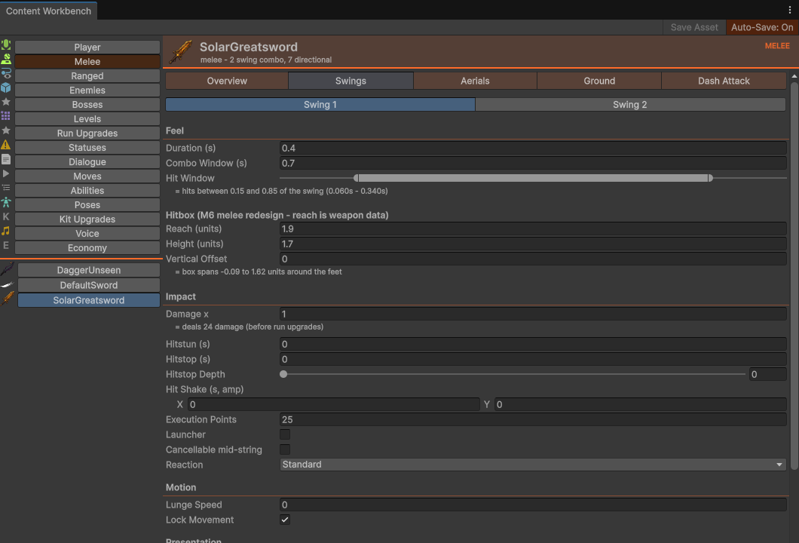
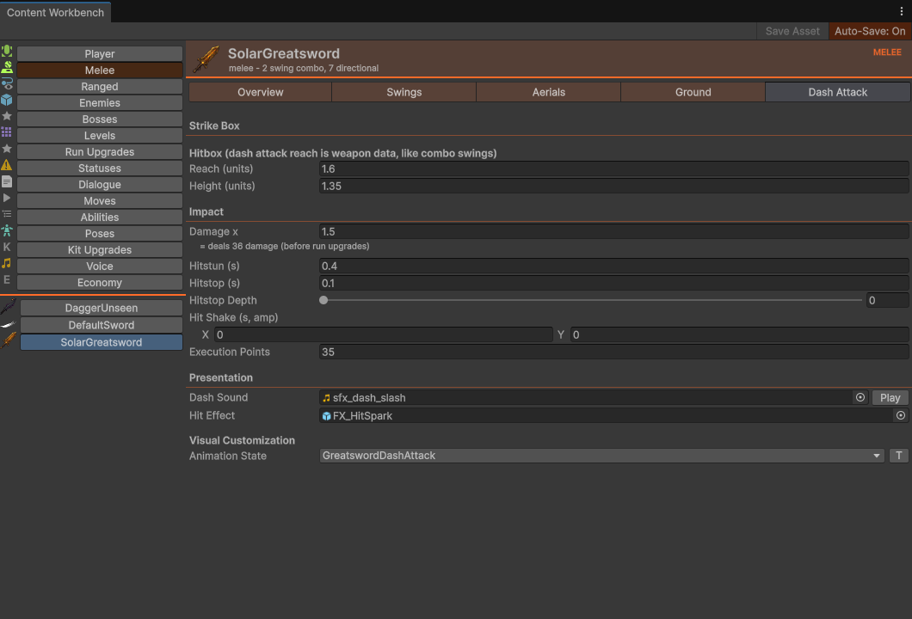
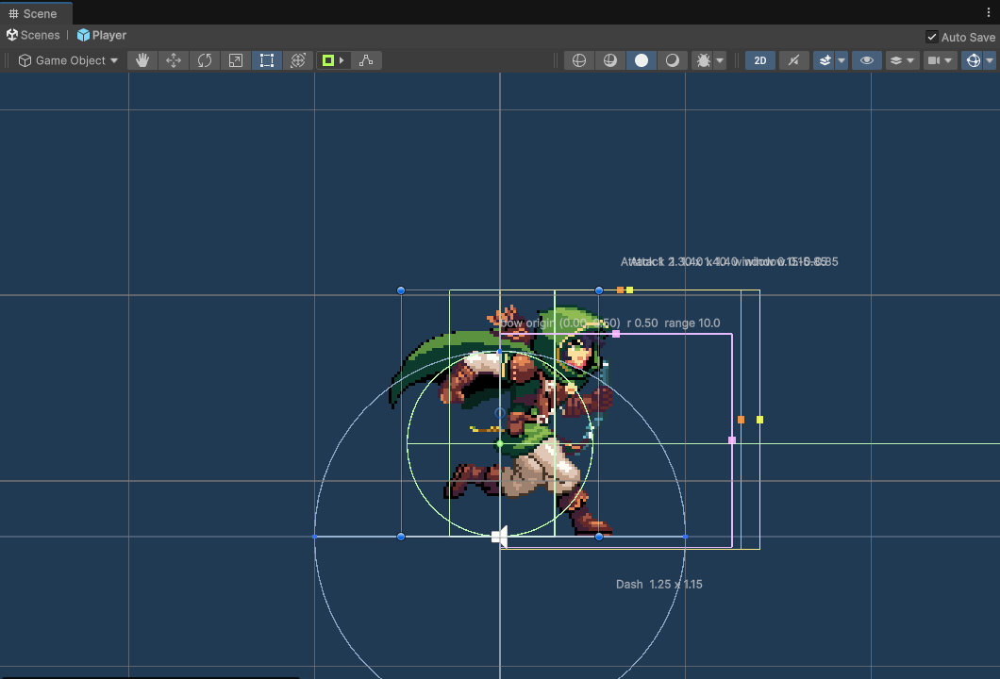

01Weapon anatomy — the shared base
Every weapon is a ScriptableObject. Melee and ranged both inherit WeaponDefinition (Assets/_Game/Combat/Code/Definitions/WeaponDefinition.cs), so these fields exist on every weapon asset. Live assets sit in Assets/_Game/Player/Resources/Weapons/.
| Field | Type | What it really does |
|---|---|---|
WeaponName | string | Display name on the HUD, pedestal and forge. Leave it empty and the asset name is shown instead (WeaponPedestal.LabelText). |
Icon | Sprite | HUD slot + pedestal sprite. Unset = blank HUD slot and the pedestal icon is hidden. Set it. |
BaseDamage | int | Melee: damage = round(BaseDamage × WeaponInstance.DamageScale × swing DamageMultiplier). Ranged: round(BaseDamage × DamageScale × perfect multiplier). The Workbench Swings tab shows the computed result live ("= deals 24"). |
BaseHitstun | float | Fallback value. Used whenever a swing/dash authors HitstunDuration = 0. Ranged shots use it directly. If a hit still lands with 0, EnemyHitState substitutes 0.2 s. |
BaseHitstop | float (default 0) | Fallback value. Used whenever a swing/dash authors HitstopDuration = 0. Hitstop only fires when the final value is > 0 (EnemyStateMachine.TakeHit → CombatTimeManager.TriggerHitstop). This fallback used to be silently dead on melee — the greatsword authored 0.15 and got nothing — it is fixed and now real. |
ArmorPiercing | bool | Sets HitInfo.armorPiercing — hits punch through enemy super armor (the per-phase SuperArmorHits budget on enemy attacks). |
StatusesToApply | List<CombatStatusDefinition> | Applied on every melee swing hit, every dash-attack hit, and every arrow hit — one CombatStatusManager.AddStatus per status per hit. See §07. |
Description | string | Player-visible — but only in the hub shop. ShopScreen.MakeWeaponRow puts it in the shop-row__desc label under the weapon's name on every row of the Weapon Unlocks tab. That tab is WeaponCatalog.LockedWeapons(), so the text is only ever read on a weapon with lockedUntilUnlocked = true (bought or not — an owned row still shows it); on a weapon that is never gated, nothing renders it. Still not shown on the pedestal (WeaponPedestal draws Icon + the name only) or the HUD (PlayerHUDController draws Icon only). Write one for anything you sell — including a mod's shop-exclusive weapon, since Description = … overrides like any string field (§10). See progression §05. |
BaseKnockback | float | Effectively DEAD — melee never reads it; ranged reads it but the magnitude is never applied to any enemy. See §08. |
lockedUntilUnlocked | bool (default false) | The hub-shop gate. True = not offered by the loot roll or a pedestal until its unlock is owned on the active slot (RunDirector.IsWeaponUnlocked, keyed by the asset name — save data), and listed on the shopkeeper's Weapon Unlocks tab (WeaponCatalog.LockedWeapons()). Offer-time only: a locked weapon still resolves, so a suspended run holding one restores. Shipped: SolarGreatsword and DaggerUnseen true, the starter sword and bow false. Retunable from an .ini like any field — §10, Selling a weapon at the hub. |
unlockCost | int (default 250) | Gleam the till charges for that unlock (RunDirector.TryUnlockWeapon refuses if not locked, already owned or unaffordable; the row's price label is this number). Read only when lockedUntilUnlocked is true — the starter weapons carry the default and it never applies. Shipped: greatsword 300, dagger 250. |
Melee adds six things (MeleeWeaponDefinition.cs)
| Field | Default | Behavior |
|---|---|---|
ComboAttacks | — | The swing chain, in order — one MeleeAttackConfig per swing (§02). The Workbench adds/removes with + Add Swing / − Remove Last; minimum one swing. |
RecoveryTime | 0.2 | Lockout after the combo ends: the state enters a Recovery phase (timer resets) and cannot exit until stateTimer ≥ RecoveryTime. |
InputBufferTime | 0.2 | Lifetime of a buffered attack press, in seconds, before it expires. |
DashAttackConfig | — | One dash-attack struct per weapon — not per swing (§03). |
AerialAttacks | empty | The airborne moveset: one DirectionalAttack per held direction, Neutral included (§02). Empty = the grounded combo clip plays in mid-air, which is the old behaviour. |
GroundAttacks | empty | The grounded moveset. No Neutral entry — holding nothing plays the combo step. Empty = the combo behaves exactly as it did before directions existed. |
The shipped roster (authored values, verbatim)
| Asset | Base | Chain | Dash |
|---|---|---|---|
DefaultSword | Dmg 1 · hitstun 0.2 · hitstop 0.1 | 2 swings: 0.3 s / window 0.5, reach 1.3×1.4, EP20 → 0.35 s / window 0.6, ×1.5, reach 1.4×1.4, EP50. Recovery 0.2, buffer 0.2. | ×20, reach 1.25×1.15, anim SwordDashAttack |
SolarGreatsword | Dmg 24 · hitstun 0.5 · hitstop 0.15 · applies Ignite | 0.4 s reach 1.9×1.7 EP25 → 0.5 s ×1.8 reach 2.1×1.8 EP50. Recovery 0.35. | ×1.5, reach 1.6×1.35, anim GreatswordDashAttack |
DaggerUnseen | Dmg 6 · hitstun 0.15 · hitstop 0 | 3 swings: 0.12/0.12/0.15 s, ×0.8/0.8/1.2, reach 0.95–1.1, LockMovement off, EP 15/15/25. Recovery 0.1, buffer 0.15. | reach 1.05×0.95, anim DaggerDashAttack |
All shipped swings author their hit window as 0.15–0.85 of the swing duration, and all three flag CanBeCancelled on their last swing and nowhere else (§02 the cancel).
…and the bow, which has no chain at all
| Asset | Base | The shot |
|---|---|---|
DefaultBow | Dmg 12 · hitstun 0.4 · hitstop 0.05 · applies StickyArrows | DrawTime 0.3, perfect window 0.55–0.65 s as authored (the live one is widened about that centre by Steady Hands — PerfectWindow()), EP20, perfect ×1.5 damage, LaneRadius/LaneDistance/ProjectileSpeed/Durability all 0 (engine defaults), and a two-entry BowAttacks moveset — Neutral and Up, both AimState, both ×1 (§04). Animation overrides empty. |
02The swing chain
Each entry in ComboAttacks is a MeleeAttackConfig — one swing. Edit them on the Gleamwood ▸ Content Workbench Melee page, Swings sub-tab. The Workbench shows only fields the runtime reads, and computes the effective numbers for you.


GreatswordDashAttack state picked from the validated animator dropdown.Every field on a swing
| Field | Live behavior | Fallback when 0 |
|---|---|---|
Duration | Total swing time in seconds. The animation clip is speed-synced to fit: Animator.speed = clipLength / Duration (guarded when either is ≤ 0.01). AttackProgress = clamp01(stateTimer / Duration). | — |
ComboWindow | Absolute time from swing START — same timer as Duration, not "extra time after". The step ends into recovery when stateTimer ≥ ComboWindow with no buffered chain. The chain fires while Duration × 0.7 ≤ stateTimer ≤ ComboWindow. | — |
DamageMultiplier | Multiplies BaseDamage. The Workbench prints the computed total next to it. | — |
HitstunDuration | Enemy stun length for this swing. | 0 ⇒ BaseHitstun |
HitstopDuration | Freeze-frame length for this swing. | 0 ⇒ BaseHitstop |
HitstopScale | How deep the freeze goes, as a timescale — lower is heavier. Duration alone could not tell a dagger tap from a greatsword down-air: both froze at the same 0.05 floor and the heavy one merely held it longer, which reads as a pause rather than as weight. Travels on the HitInfo as hitstopScale and is honoured in EnemyStateMachine.TakeHit. | 0 ⇒ the shared 0.05 default (0 is never forwarded as a timescale — it would stop the world) |
HitShake | Screen shake this swing earns on a hit: x = duration (s), y = amplitude. Scaled by the Screen Shake accessibility setting (Full / Reduced ×0.5 / Off ×0) inside ShakeComponent, so it needs no per-caller check. | Zero on either axis ⇒ no shake, which is every shipped swing today |
ExecutionPoints | Always added; the meter caps at the target's own execution threshold, which each enemy authors (§07). Scaled by ExecutionScale. Executions trigger on a follow-up hit after the meter is already full. | — |
MovementForce | The lunge. Only .x is read: velocityX = MovementForce.x × facing × 10 for the first 0.1 s, then 50/s friction. The Workbench exposes it as a single float, "Lunge Speed". .y is dead. | — |
LockMovement | After the 0.1 s lunge threshold, zeroes horizontal velocity for the rest of the step. | — |
HitboxReach | Horizontal reach from player center in the facing direction (§05). | ≤ 0.01 ⇒ 1.2 |
HitboxHeight | Vertical extent of the box (§05). | ≤ 0.01 ⇒ 1.4 |
HitboxOffsetY | Shifts the box up (+) or down (−) from its default seat, in world units. A down-air is unusable without it: the box seats at height × 0.45 above the player's feet, so by default it covers [−0.05h, +0.95h] and reaches almost nothing below them. The shipped down-airs author −0.7 × height, putting the span at roughly [−0.75h, +0.25h]. | 0 ⇒ unchanged |
HitWindowStart | Fraction of Duration when the box goes live (Range 0–1). 0 is a valid start — no fallback here. | none — 0 is real |
HitWindowEnd | Fraction of Duration when the box stops. | ≤ 0.01 ⇒ 0.9 |
HitEffect | Prefab instantiated at the contact edge on hit — the closest point on the target's collider to the swing's origin, not the target's pivot. The pivot is the sprite's feet on most enemies, so sparks spawned there read as hitting the floor. Falls back to the target's position when it has no Collider2D. The dash does the same; the bow always did (it uses the sweep's own hit point). | — |
AttackSound | PlayOneShot on the player's AudioSource at swing start. The Workbench row has a ▶ Play preview. | — |
CustomPlayerAnimationState | [AnimatorStateRef(0)] — a base-layer (layer 0) player animator state, picked from a validated dropdown of real states. A wrong raw name is a silent no-op in game (the drawer flags unknown names in the editor). | empty ⇒ PlayerMeleeAttack1 for step 0, PlayerMeleeAttack2 for every later step |
IsLauncher | Launches on contact. This is the ONLY way an enemy goes airborne — there is no meter to fill. Gated on the target's CanBeJuggled and on it being grounded; you cannot launch someone already up there. (Was inert until the directional movesets landed, and became the whole launch system when the juggle meter was deleted.) | — |
CanBeCancelled | This swing may be cancelled into a directional attack. It is what decides which swing cancels — the rule used to be "the last one", by index, and is now the weapon's to state; and in the air it is additionally the opt-in without which no cancel is permitted at all (§02 the cancel). It costs the same per-string budget either way — it changes which swing may cancel, never how many times a string can. Workbench label: Cancellable mid-string. | off ⇒ this swing does not cancel — unless the weapon flags no swing anywhere, in which case its last hit still does |
KnockbackForce | .y's magnitude is the spike speed when Reaction = Spike (floored at 18). Otherwise still inert — only the normalized direction feeds EnemyDashExecutionState. | spike falls back to 18 |
Reaction | What the hit does, beyond its numbers. Standard = hitstun (or a launch, if IsLauncher). Spike = drive an airborne target at the floor, ending the juggle, and pay off on impact; against a grounded target it lands as ×1.5 hitstun instead of nothing. Crumple = no knockback and ×2 hitstun — the combo extender. | Standard |
> 0.01 / > 0 checks, so 0 means "use the default", never "none". The single exception: HitWindowStart 0 is real. HitstopScale and HitShake follow the same rule for the same reason: a real 0 depth would stop the world outright, and a 0-length shake is indistinguishable from no shake.CombatTimeManager — dramaticFreezeMultiplier and perfectHitShake — rather than written at the call site, because the enemy's hit handler is the last place anyone would look for "how long does a perfect shot stop the game for". Everything else authors HitShake on the swing.PlayerHurtReact.FlashRoutine, and this half works). The enemy hit flash is a single fade from full to zero, which is far milder, but a combo lands several a second on the same sprite; the design is to drop its peak rather than remove it, so the hit stays legible. Neither should be silently dropped: the player must still be able to see what connected.
Both halves honour it now, and the enemy half did not until the sweep that wrote this paragraph found otherwise:
FlashRoutine wrote the reduced peak once and then faded from a hardcoded 1f, so the setting held for a single frame and was overridden for the remaining 0.15 s — the whole flash. Fixed, and pinned by AccessibilitySettingTests, which asserts both directions: dim stays dim, and with the setting OFF the flash still reaches full brightness (otherwise "it stayed dim" would pass against a flash that never lights up).How the swing actually scans
ScanForHitsruns everyFixedUpdateduring the hit window:Physics2D.OverlapBoxAll(center, size, 0f)— no layer mask.- Targets need
IHittableon the same GameObject as the collider (not a parent). Anything with aPlayerStateMachinein its parents is skipped — you can never hit yourself. - One hit per target per swing step (
_hitThisStepset, cleared each step). - Trigger colliders are not ignored — a stale XML comment claims otherwise. Enemy body colliders ARE triggers (Enemy layer); the
IHittablerequirement is the target filter, not trigger-ness. - Attack start kills momentum (
mover.Launch(Vector2.zero)); exit resetsAnimator.speed = 1. Damage type isMELEE_SLASH.
Combo timing knobs (player-side, not per-weapon)
These live on PlayerMeleeAttackConfig, a sub-asset of Assets/_Game/Player/Data/PlayerDef.asset — edit via the Workbench Player category. Stamped values: LungeTimeThreshold 0.1, LungeForceMultiplier 10, LungeFrictionRate 50, InputBufferTiming 0.6 (the next press can buffer from 60% of Duration), ComboProgressTiming 0.7 (the chain fires from 70%), BowTransitionTiming 0.8 (melee→bow branch — only from combo step index 1, while the range-attack button is held). Transition priorities: Dash 12 > BowAim 11 > Fall 10 > Run 9 > Idle 8.
The held direction picks the move
- The CHAIN COMBO — pressing attack repeatedly advances the weapon's authored string, and every swing it produces is the plain combo step. Free: no purchase, no budget, nothing to own. The stick does not reach into it.
- THE CANCEL — interrupting a swing into a directional attack (
SwingCause.Cancel; the page uses "the cancel" for this and nothing else). Directionals are separate special moves, and a cancel is the way into one mid-string. This is what Chain Technique buys.
Loose Grip), not part of the purchase — otherwise every string would end in a free special-to-special.
StartAttack takes a SwingCause (Opener / Chain / Cancel) and only the first and last may resolve a direction. Before that it re-read the stick on every swing, so the chain handed out special moves for free and Chain Technique bought a verb the player already had under another name — which is exactly why the cancel "never seemed to do anything".A weapon authors two extra lists beside its combo: AerialAttacks and GroundAttacks, each a list of DirectionalAttack (Direction, AnimationState, OverrideConfig, Config). They are authored on the Melee page's own Aerials and Ground sub-tabs — beside Swings and Dash Attack, through the identical form the swings use, so a move's numbers are edited exactly like a swing's. Aerials carry a Neutral slot; Ground deliberately does not (see the resolution note below). The stick is read once, at the moment the swing starts, and never re-read while it plays — a move you committed to should not change identity because the stick moved mid-swing.
- Vertical beats horizontal.
AttackDirections.FromInputtests up, then down, then any held horizontal. Reversing that would make up unreachable in motion, because the player is nearly always holding some horizontal while moving. Threshold is0.5, the same constant the drop-through check uses, so "holding down" cannot mean two different things. - There is no Back. Holding away from your facing turns you around; it does not produce a backward attack. A real one needs a lock-on or a back-dash to face away from, and neither exists.
OverrideConfigis what makes a direction a MOVE. Left off, the variant borrows the combo step's numbers and only changes the drawing — a costume. Turned on, it carries its own damage, reach, timing and reaction. Every shipped Up, Down and Forward turns it on; the aerial Neutral entries deliberately leave it off, because Neutral is the combo step's swing taken in mid-air and has no numbers of its own to declare.
TryResolve vs TryResolveExact; a single shared resolver would look tidier right up until the combo stopped working.The shipped grammar
| Direction | On the ground | In the air |
|---|---|---|
| Up | The launcher, by default and by design — tall box, short reach, IsLauncher. It is the only move in the shipped data that puts a target in the air, and therefore the only way the aerial moveset is reachable inside a combo. Sold at 20 Gleam — MoveCatalog's Uppercut, the cheapest of the seven moves for sale precisely because everything is behind it: near-zero rather than free so it reads as the obvious first purchase and teaches the shop in the first minute. A fresh profile has no launcher at all. | Anti-air. Not a launcher — Updraft imbues one rolled move per run with that property (per-run modifiers), and this is only its default target. |
| Down | Crumple — a low sweep with no knockback and the longest hitstun on the weapon. It buys the next hit its window. | Spike — drives an airborne target into the floor and ends the juggle. On a grounded target it lands as ×1.5 hitstun instead of whiffing. |
| Forward | The running attack. Longest reach, carries its own MovementForce.x, does not lock movement. | The committed air lunge — out-reaches every other aerial. |
| Neutral | — (the combo step) | The plain aerial swing; also the fallback for any unauthored direction. |
A ground direction branches the string rather than ending it. Its ComboWindow is authored wider than its Duration (×1.7 on every shipped move), so the combo continues out of a directional swing. Aerials do the opposite — window equals duration — because one attack per airtime is the rule up there.
MoveCatalog.Baseline is the free set and it holds no ground move at all — the neutral air and the two baseline bow moves. The ground up-attack is a permanent purchase like the rest, which matters when reading the cancel rules above: the OPENER being ungated means ungated by Chain Technique, not by move ownership. (This line previously said the ground up-attack was free; it is priced in MoveCatalog.) The rest are permanent purchases at the shopkeeper's Ground, Air and Bow tabs (progression §04c). A withheld move resolves exactly as an unauthored one does — an aerial falls back to the neutral air, a ground direction resolves to nothing and the combo step plays — so nothing goes silent and the string keeps advancing. The *Owned resolvers carry the gate; TryGetAerial/TryGetGrounded stay the asset's answer, because the Workbench has to show a move nobody has bought.IsLauncher, left over from when the flag did nothing — so the neutral string popped enemies into the air on its own, which is not a decision the player made. Cleared. The aerial up-attack's flag went with it, because "the up-air also launches" is a thing a run should earn. If you author a second launcher, be able to say what decision it rewards.The cancel
Which swings cancel is the WEAPON's decision, authored per swing on CanBeCancelled. A swing that flags it can be cancelled into a directional attack instead of dead-ending into recovery — hold a direction and press attack again during the same window an ordinary chain uses (ComboProgressTiming). All three shipped melee weapons flag their last swing and nothing else, which is the old behaviour said out loud; a heavy weapon can now dead-end its final swing by leaving the flag off. Mechanically the cancel restarts the same combo index; its identity as a different move comes entirely from the directional variant the stick resolves.
- The index rule survives for exactly one case. A weapon that flags no swing anywhere — a mod weapon written before the field existed deserialises every flag as false — still cancels on its last hit, because silently losing the verb on someone else's content is a worse failure than granting it. A weapon that flags anything is taken at its word. One predicate,
MeleeWeaponDefinition.AuthorsACancellableSwing, answers it for both the gate and the loadout readout, because when they answered it separately the readout promised a cancel the gate refused. This used to be an index rule outright — the last hit always cancelled and the flag could only widen it — which let a weapon opt an extra swing in and never opt its final swing out. - Ground unconditionally; in the air only if the move opts in. A grounded cancel needs the budget, the purchase and a flagged swing. An airborne cancel additionally needs the resolved config's
CanBeCancelled— no shipped aerial authors it, and the run's imbue can grant it for one named move at a time. That gate is a loop guard, not a preference: a cancel restarts the same swing with a fresh timer, so an always-cancellable aerial is a player who never falls, hanging on cancels while every stack of Chain Break buys more hover. - It resolves in the plane it happened in. Ground resolution is exact with no Neutral fallback, so holding nothing on the floor leaves the string ending exactly as it did before — without that, the last step would silently replay itself as a free extra hit. Air resolution falls back to Neutral, so an airborne cancel with no direction held gives the neutral air attack. An airborne cancel that resolved a ground move would play a grounded swing in mid-air and reach a move the player can otherwise only perform on the floor. (The one exception: cancelling out of a special move — the
Loose Gripboon — always resolves the grounded set, which is why that boon is ground-masked.) - Budgeted, and the budget is a safety property. One per string by default (
CancelBudget). A cancel zeroes the state timer, so an unbounded budget means a player holding a direction never reaches recovery and never leaves the attack state. The budget is raised by the Chain Break run modifier, which is capped for the same reason.ComboCancelTestscounts swings to pin both halves. - Two places may say yes, and both are asked. The step's flag is a statement about this position in the string; the resolved config's flag is a statement about the move actually playing — a directional variant that authors its own, or one the run imbued. Asking only the resolved config shipped a bug for one test run: hold a direction and
resolvedConfigbecomes the variant's config, which carries none of the step's authoring, so the last swing of every weapon stopped cancelling the moment the player touched the stick. - The chain is checked first, and the cancel is explicitly refused while the chain could still fire (
!CanProgressCombo()). A cancel restarts the same index, so a cancel that could outrace the chain would sit on step 0 spending its whole budget and then leave the state with a live buffer, a truemayChainand nothing able to fire — a hang, caught byAnImbuedCancel_StillEndsTheStringbefore it shipped. The practical consequence: the flag's visible effect today is on a weapon's final swing, opting it in or out. The cancel window is bounded at both ends for the same reason (it used to have only a lower bound and closed by accident, which was harmless only while the cancel was pinned to the last step). - The bow window (
ShouldTransitionToBow, keyed on combo step 1) is closed during a cancel. On a two-step weapon the last step is index 1, so a cancel's fresh timer would otherwise re-open it and yank the directional attack intobowAim.
PlayerRunState switches the split back on when the player next moves. A directional clip that arrives carrying a slot would be routed to a split half and cut in two; the wiring tests assert the slot is empty rather than assuming it.03Dash attacks — the traveling box
Press attack while dashing and PlayerDashAttackState takes over. Each weapon authors exactly one DashAttackConfig — edit it on the Dash Attack sub-tab (screenshot in §02).
- Enter: momentum zeroed,
GravityScale = 0for the whole strike. Direction = move-input sign, else current facing. - The box travels.
ScanForHits()runs every FixedUpdate whilestateTimer < DashAttackDuration, and the box is recomputed viaGetScanBoxat the player's current position each physics step — it rides along with the dash. Same filters as melee;_hitThisDashgives one hit per target per dash. - Damage type is
DASH_SLASH— this is what triggers the execution on Juggled enemies.isLauncheris always false on the dash path. - Exit: after
DashAttackDuration, gravity returns to 1 and the player decelerates atDecelerationRate.
The struct's fields mirror a swing: DamageMultiplier, HitstunDuration / HitstopDuration (0 ⇒ Base, same rule), HitstopScale and HitShake (identical rules to a swing's — 0 ⇒ the shared 0.05 depth, zero on either shake axis ⇒ no shake; both are exposed on the Dash Attack sub-tab and both ride the HitInfo), ExecutionPoints (this one was once dropped on the floor — the dash's authored execution points never landed; fixed), HitEffect (spawned at the contact edge, §02 — the dash was the last thing still aiming at the pivot, which is why heavy dashes looked like they missed low), AttackSound, HitboxReach / HitboxHeight (0 ⇒ 1.2 / 1.4), CustomPlayerAnimationState, and the inert KnockbackForce. There is no HitboxOffsetY and no CanBeCancelled on the dash.
The dash animation contract: full-body vs the legacy overlay
CustomPlayerAnimationState | What plays |
|---|---|
| Set (the modern contract) | Played as a full-body state on base layer 0, speed-synced to span the strike window: Animator.speed = clipLength / max(0.05, DashAttackDuration). All three shipped melee weapons do this: SwordDashAttack, GreatswordDashAttack, DaggerDashAttack. |
| Empty (legacy fallback) | Animator.Play("Upper_Slash1", 1, 0f) — the layer-1 upper-body overlay; the legs keep the dash pose. Fine for prototyping, but ship a full-body state. |
Player-side dash tuning lives on PlayerDashAttackConfig (PlayerDef sub-asset), stamped: DashAttackDuration 0.4, DashAttackSpeed 10, DecelerationRate 50, CanPassThroughEnemies true (false ⇒ the first hit ends the dash early), RunInputThreshold 0.1.
04Ranged weapons — the bow truth
The arrow is the shot. It leaves on release carrying a verdict already decided — damage, knockback, the perfect judgement — and sweeps its own lane until it connects or runs out of range, so travel time is real: an enemy who steps into the lane after you loose is hit, and one who steps out is missed. The two numbers that make one bow different from another are therefore ProjectileSpeed and Durability — how long a target has to react, and how many bodies one arrow may pass through — with LaneRadius / LaneDistance deciding how fat and how far the lane is. Author these on the Workbench Ranged page (Overview / Shot & Timing / Presentation sub-tabs).
CircleCastAll at the moment of release and the arrow was a decorative tracer flying a line whose outcome was already settled — which meant an arrow could visibly pass through an enemy who had just walked into it, and kill one who had just walked out. If you find a doc or comment describing a hitscan bow, it predates that.| Field | Live behavior |
|---|---|
ProjectileSpeed | Units per second the arrow flies. 0 = the projectile prefab's own speed (34 on the shipped arrow). This is the range trade-off — travel time is what a distant target gets to react in — which is why it is authored per weapon rather than fixed in code. |
Durability | How many enemies one arrow may strike before it is spent. 0 = ask PlayerBowAimConfig.SingleTargetHit, which is what every shipped bow does; 1 reproduces that exactly. Higher values pierce. The cap is not only balance — a travelling arrow has to remember who it struck or it re-hits them every frame its sweep overlaps them, so the bound is the loop guard first (rule 7). |
LaneRadius / LaneDistance | How fat and how far this bow's lane is. 0 = the state config's ProjectileRadius / ProjectileMaxDistance (0.5 / 10 shipped) — the same 0-means-default pattern as HitboxReach. This is what makes a sniper bow and a scattershot authorable as assets, and mod-overridable from a campaign's Weapons/*.ini, with no code. |
DrawTime | Releasing before aimTimer ≥ DrawTime cancels the shot — nothing fires. Also gates the hold-anim switch and the stand-draw resume point. |
PerfectTimingStart / PerfectTimingEnd | Seconds from aim start; releasing inside the window is a perfect shot. The HUD ring is fed clamp01(value / MaxChargeTime). |
PerfectDamageMultiplier | Damage multiplier on a perfect release (shipped: 1.5). |
BowAttacks | The bow's directional moveset — a list of RangedAttack (Direction, AnimationState, Kind, DamageMultiplier). Resolved through the same AttackDirections rules the melee movesets use. See below. Empty = the plain single shot, which is how it behaved before the moveset existed. |
ExecutionPoints | Flat per arrow hit, scaled by the ranged WeaponInstance's ExecutionScale. |
HitEffect | Instantiated where the arrow's sweep actually connected (its own position for a point-blank hit, where the cast reports no meaningful point). |
arrowLook | Per-bow arrow appearance: tint, hue shift, emission + strength, pulse speed/amount, overlay colour/scroll/strength, outline colour/width. Every field is a no-op at its default, so a bow that says nothing gets a plain white arrow with a readable outline — the shipped bow authors a warm tint and a soft ember emission and nothing else. |
ReleaseSound / PerfectReleaseSound | Chosen by normal vs perfect; played if PlayerBowAimConfig.UseAudioFeedback. |
Airborne is a third stance, and it is ONE clip — none of the three override fields below apply there. Off the ground the whole shot plays as AerialBowShot, full-body on layer 0 with the split rig switched off: tuck, twist, draw, loose, recover as one continuous motion, rather than the ground bow's draw / hold / release staging. The release still fires on its own timer; the animation simply does not branch. Nothing checked IsGrounded here before, so drawing a bow in mid-air played the planted stance — feet set, weight on the back leg, hanging in the sky. A skin that does not supply the clip falls back to the grounded staging rather than erroring every frame. | |
DrawAnimationState | [AnimatorStateRef(0)], default StandBowDraw. Overrides only the planted draw; planted hold and release are the hardcoded StandBowHold / StandBowRelease and cannot be overridden. While moving the legs stay on RunBowCharge for the whole draw and the shot — only the torso changes. |
HoldAnimationState | [AnimatorStateRef(1)], default Upper_RunBowCharge — layer 1, and only while moving; planted, it is never read. It is the torso half of the run-and-aim drawing whose legs half plays underneath, started at the legs' phase, which is what makes the waist join invisible. |
ReleaseAnimationState | [AnimatorStateRef(1)], default Upper_RunBowShoot — layer 1, on fire, only while moving; a planted release is the hardcoded StandBowRelease on layer 0. The default resumes at the legs' current phase (a custom clip starts at 0), and firing swaps layer 1 only, so the stride never restarts however fast you shoot. |
Overriding either layer-1 clip re-opens the waist seam. While running and aiming the player is drawn as ONE drawing cut at the waist by a shader — RunBowCharge below, Upper_RunBowCharge (identical frames) above. That is the only arrangement that hides the join: measured on the shipped archer it sits at 2.7px, where a standing bow pose over running legs sat at 11px and no pivot, canvas size, slice angle or frame remap got near. Point these fields at a clip from any other drawing and the character comes apart at the belt. | |
ProjectilePrefab | Live, and load-bearing. It is the thing that carries the damage. A bow that authors none still shoots — an invisible arrow is spawned so the shot is not lost — but it shoots something the player cannot see, so leaving it empty is a bug, not a style. |
DrawSound · PerfectForceMultiplier | Dead — §08. The Workbench lists them in its "Not yet in game" note on the Presentation sub-tab and keeps them off the editable form. |
The bow's moveset, and the two aim modes
The bow carries a directional moveset of its own now, resolved through the same AttackDirections rules as melee — vertical beats horizontal, Neutral is the fallback, an unowned direction falls through to Neutral rather than going silent. DefaultBow authors two entries: Neutral and Up, both AimState, both ×1 damage. Each is addressable from a campaign's Weapons/*.ini as [Weapon:DefaultBow.bow:up] — the same suffix grammar the melee movesets use (§10).
RangedAttack field | What it says |
|---|---|
Direction | Which way the stick must be held. Neutral is the fallback. There is deliberately no Down — firing a bow between your own legs is not a shot, and the move grammar refuses to name a bow:down for the same reason. |
AnimationState | Two jobs, and only one of them plays a clip. Always: it is the authored sentinel — empty means the direction is unauthored and TryResolve skips it, which is why both shipped entries keep a non-empty name (StandBowDraw) even though nothing draws it. Only on an InstantShot: it names the clip, and it is a layer-1 torso clip ([AnimatorStateRef(1)]) played at the legs' current phase, so a running shot never restarts the stride. On an AimState move nothing reads it at all — the draw is the weapon's DrawAnimationState/HoldAnimationState and the hardcoded StandBow*/RunBowCharge names. |
Kind | AimState (charges, judges the perfect window) or InstantShot (looses on the press, no draw). An explicit enum rather than an isInstant bool, because the two are different mechanics and a bool would have read as a tuning knob. Both shipped entries are AimState. |
DamageMultiplier | Multiplies the weapon's base damage for this direction. 1 = unchanged. |
bow:up — starts the shot aimed straight up (VerticalBase 90°), where the stick then leans it up to MaxAimAngle (45°) downrange or back over the shoulder. Anything else is the ordinary level shot, which tilts ±45° up or down from the facing. Both sweep toward the held direction at AimSweepDegreesPerSecond (240°/s) — a rate, not a lerp factor, so the sweep takes the same wall-clock time at any frame rate. Recomputing the mode per frame meant letting go of up mid-draw silently turned a skyward shot into a level one, which reads as the aim sliding out from under you. One function (AimVector) is read by both the shot and the reticle; two copies of it would report as input lag rather than as a drawing error.bow:up is bought; neutral and forward are not. Skyward Shot costs 100 Gleam at the shopkeeper's Bow tab (progression §04c). MoveCatalog.Baseline holds bow:neutral and bow:forward — firing while running is what a bow does, not a thing you buy. An unowned Up is not a dead button: it falls through to the level shot, exactly as an unauthored direction would. Separately, Quick Quiver (a meta purchase, MetaEffect.BowCancel) adds an exit from the draw straight into a melee swing with no arrow loosed — unbudgeted and unlimited once bought; without it the draw cannot be abandoned at all.MaxAimAngle 45 and AimSweepDegreesPerSecond 240 are the live values, but note they are not written into PlayerDef.asset yet — the sub-asset predates both fields, so they run at their C# defaults until someone re-serializes it.
How the shot resolves
PlayerBowAimState.FireBowProjectile does not cast. It asks PlayerBowAimState.GetLane for the four numbers describing the shot — origin, direction, distance, radius — packs the damage roll, knockback, statuses and the perfect flag into an ArrowShot, and hands the whole thing to an ArrowProjectile. fireOrigin = player position + FireOriginOffset; the direction is the facing tilted by the live aim angle, and nothing else — there is no auto-aim. Damage type RANGED_PIERCE. Holding past MaxChargeTime auto-releases.
_runningAim is sampled at Enter from whether horizontal input was held, for the same reason the aim mode is: it is the shot you started, not a stick you are still holding. Re-deciding it per frame let a planted draw walk off the moment the stick twitched. A running draw moves at horizontal input × MoveSpeed × AimMoveSpeedMultiplier (0.9 shipped); a planted draw is speed 0 and the multiplier is never read at all. Either way the mover is accelerated toward that target at the player's own RunAcceleration (× TurnAccelerationMultiplier on a reversal) rather than being handed a velocity directly — the old direct set snapped a bow-aim run to full speed on frame one while an ordinary run eased in, so the same stick produced two different accelerations depending on whether you were holding the bow.The arrow then resolves itself each frame: it sweeps a CircleCastAll from where it is to where it is about to be — layer-masked against context.EnemyLayers, unlike melee — and delivers the payload to whatever it crosses, nearest first, spending one point of durability per enemy. It sweeps rather than testing its position because a projectile moves in jumps: at 34 u/s that jump is 0.68 units per physics step, wider than several colliders in this game, so a trigger collider (the obvious alternative) would step clean over a thin enemy — and widening it to compensate would start hitting things the arrow visibly passed beside.
Two consequences worth knowing. The perfect-shot dramatic freeze now lands on the impact rather than the release, for free — it fires inside EnemyStateMachine.TakeHit off hit.isPerfect, so delivering the hit later moves the freeze later. And the payload is decided at release and merely carried: an arrow in flight never re-rolls a shot the player has already committed to.
Player-side stamped values (PlayerBowAimConfig in PlayerDef.asset): MaxChargeTime 1.5, AimMoveSpeedMultiplier 0.9, FireOriginOffset (0, 0.5), ProjectileRadius 0.5, ProjectileMaxDistance 10, SingleTargetHit true.
05GetScanBox — the single source of truth
Every melee swing, every dash strike, and the scene-tuner gizmos all compute their box through one static method: PlayerMeleeAttackState.GetScanBox. The comment in the file says it plainly — "keep all box math HERE" — which is why the preview can never drift from the game.
// PlayerMeleeAttackState.GetScanBox(reachRaw, heightRaw, origin, dir, out center, out size, offsetY = 0)
reach = reachRaw > 0.01f ? reachRaw : 1.2f; // 0 means "default", never "none"
height = heightRaw > 0.01f ? heightRaw : 1.4f;
center = origin + new Vector2(dir * reach * 0.5f, height * 0.45f + offsetY);
size = new Vector2(reach, height);originis the player transform position — the pivot is at the feet.diris +1 right / −1 left.- So the box spans
origin.y − 0.05·height + offsetYtoorigin.y + 0.95·height + offsetYvertically, and from the player's center line toreachunits forward. offsetYis not hypothetical — it is the only thing that makes a down-air reach below the feet, and the shipped ones author it (DefaultSword−1.47,SolarGreatsword−1.82,DaggerUnseen−1.225; all three ≈ −0.7 × their height). Deriving it from the direction instead would put the geometry somewhere a designer cannot see or drag.- An overload takes a
MeleeAttackConfigand forwards itsHitboxReach/HitboxHeight/HitboxOffsetY. - Editor-only debug feed: both melee and dash scans write
DebugLastScanCenter/Size/Timestatics, which the scene tuner draws as a fading red flash in play mode — instant whiff diagnosis.
06The scene tuner, handle by handle
PlayerCombatRangePreview lives on Assets/Prefabs/Player.prefab. Select the Player in any scene (or the prefab stage) and every reach box appears as draggable gizmos — the combo swings, the dash strike, each directional move that authors its own numbers, and the bow lane — drawn through the real GetScanBox, so what you see is exactly what the game scans.
PlayerMeleeAttackState resolves the combo step's config, so the swing scans the combo box that is already on screen. The tuner draws nothing extra for it on purpose — a box the game never scans, with handles writing into fields nothing reads, is worse than no box. DefaultSword's neutral aerial is exactly this, which is why the shipped sword draws six directional boxes and not seven.
Component fields
| Field | Purpose |
|---|---|
Weapon | The MeleeWeaponDefinition being previewed and tuned. Swap this to tune another weapon — the handles always write to whatever is slotted here. |
AttackIndex | −1 = all swings overlaid; 0-based index to focus a single swing. |
PreviewFacingLeft | Mirror the boxes to check the left-facing silhouette. |
DrawnMoves | Mask of which directional moves to draw and drag, defaulting to all seven (MoveSet.Melee). Untick to isolate one — the moveset overlays the combo, so seven at once is a lot of rectangles. It is the same MoveSet the shop saves and a run imbue targets, so the mask and the purchase name one move; the three bow bits do nothing here (the bow's drawing is ShowBow). |
ShowBow | Draw the bow fire origin + projectile lane from PlayerDef's PlayerBowAimConfig (default on). |
ShowLiveScan | In play mode (even unselected): a red flash of the LIVE scan box for 0.25 s after each swing/dash scan (default on). |
The handles
| Handle | Writes | Clamp |
|---|---|---|
| Cube on each swing box's far edge | That swing's HitboxReach | 0.2 – 6 |
Handle on each swing box's top edge (top sits at origin.y + 0.95·height + HitboxOffsetY — the same span §05 states, and the handle re-derived it WITHOUT the offset until 2026-08-12) | HitboxHeight | 0.3 – 5 |
| Same two handles on the violet box | DashAttackConfig.HitboxReach / HitboxHeight | same clamps |
| Far and top edge of each directional box | That move's own Config.HitboxReach / HitboxHeight — written back into the AerialAttacks / GroundAttacks list slot | same clamps |
| Bottom edge of a directional box — the whole box slides rather than growing | Config.HitboxOffsetY. This is the handle a down-air is tuned with: the box seats above the feet, so at offset 0 a plunge sweeps the air in front of the player and misses the enemy underneath. Combo swings do not get this handle — all seven shipped ones author 0. | −5 – 5 |
| Green free-move handle at the bow origin | PlayerBowAimConfig.FireOriginOffset | — |
| Handle at the end of the green lane | PlayerBowAimConfig.ProjectileMaxDistance — the default lane length. A bow that authors its own LaneDistance (§04) overrides it and this handle will not move that bow's real reach. | 1 – 40 |
Colors: swing 1 ember orange, swing 2 gold, swing 3 cyan, dash violet, bow green. Directional moves are coloured by direction — Neutral pale, Up blue, Down magenta, Forward teal — and the ground plane is the same hue dimmed, so both planes can be on at once. Labels on each box show the swing name, size and hit window; a directional label also carries its move key (aerial:up), which is the string a mod file and a run imbue address it by. The inspector has a Select Weapon Asset (full attack list) button to jump to the raw asset.
Undo.RecordObject + SetDirty directly on the weapon definition / PlayerDef sub-asset — fully Ctrl+Z-able, but you are editing the one shared SO every copy of that weapon uses. That's the point (tune once, everywhere), just don't leave an experiment half-dragged.- Open any scene with the Player in it (or open
Assets/Prefabs/Player.prefabin the prefab stage) and select the Player. - Slot the weapon you want to tune into
PlayerCombatRangePreview.Weapon. - Tuning one directional move? Set
DrawnMovesto just that move — otherwise its box is one of ten on screen. Seeing no directional box at all is usually an empty mask or a weapon whose directions are costumes; the inspector says which. - Drag the far-edge cube for reach, the top-edge handle for height, and (directional moves) the bottom edge to slide the box. Watch the labels.
- Enter play mode with
ShowLiveScanon and swing — the red flash is the actual box the game scanned. If the flash misses where you expected, the numbers are wrong, not the renderer.
The matching enemy-side tuner (EnemyRangePreview — detection/leash/attack-trigger rings and strike bands) is covered on Enemies & Bosses.
…and the same boxes in the game
Everything above is Scene view only — it is OnDrawGizmos, so it is absent from any build and from the Game view. CombatHitboxViewer is the runtime half: GL lines drawn straight into the game image, following the player, in the editor's Game view and in a development build. It reads the identical three functions (GetScanBox, InHitWindow, PlayerBowAimState.GetLane), so the two views cannot disagree.
| What | Where |
|---|---|
| Turn it on | F1 ▸ Hitboxes tab ▸ Show hitboxes, or press F2 at any time. Off by default; nothing persists (every switch is Save = false). |
| Bright box + diagonals | The swing in progress, diagonals while its hit window is open. Reads the RESOLVED config, so a directional variant or a run imbue shows its own box, not the combo step's. |
| Dim boxes | Every other combo swing plus the violet dash strike — the reach comparison. Toggle All combo swings. |
| Red fading box | The rectangle Physics2D.OverlapBoxAll was last actually handed (melee and dash). Toggle Flash the last scan. |
| Green stadium | The lane a shot WOULD take: origin cross, both rails at ±radius, end cap at max distance, tilted by the live aim angle. Toggle Bow lane + arrows. |
| Green circle in mid-air | An arrow in flight, drawn at the footprint its sweep is using. This one survives Only while active while the lane above does not — since the arrow became authoritative it is a live hitbox, and the lane is only a prediction. |
| The numbers | F1 ▸ Troubleshoot ▸ Hitboxes (F2) prints the live box size, hit window and lane geometry as text — that row is also the authoritative on/off reading, because the tab's checkbox does not follow the F2 key. |
PlayerDebugUI.Start, which returns early in a release player — so a shipped build has no viewer to switch on. Tick Development Build when building if you want it in a playtest.07Statuses, launches & executions
Every hit carries two payloads besides damage — statuses and execution points — and both land in the enemy's CombatStatusManager. The number to hold in your head before you tune ExecutionPoints: an execution takes three hits minimum, never two, against every enemy in the roster — no single shipped blow can fill anyone's meter, and the hit that fills it can never be the hit that spends it (the arithmetic is below). Three is the floor, not a promise: the fill hits also have to leave the enemy alive, and with two of the three purchasable blades most of the roster dies first — the box below has the weapon × enemy table. Getting an enemy AIRBORNE is not a payload at all: it is a single flag, IsLauncher, on the swing that does it.
CombatStatusDefinition (Assets ▸ Create ▸ Combat ▸ Status Definition)
| Field | Behavior |
|---|---|
StatusName | Display name — feeds the OnStatusChanged event and status tags. |
DecayTime (default 5) | Stack lifetime in seconds. The timer refreshes to full on every re-apply, and expiry clears the whole stack at once (ClearStatus), not one stack at a time. |
MaxStacks (default 10) | Stack count clamp. |
Description / Icon | DEAD — not shown in game yet (§08). |
Shipped: Ignite (decay 5, max 3 — applied by SolarGreatsword) and StickyArrows (decay 5, max 10 — applied by DefaultBow), in Assets/_Game/Enemies/Data/StatusDefinitions/. Statuses gate executions (ExecutionDefinition.RequiredStatus) and enemy transitions — a weapon that applies the right status is the key that unlocks the finisher.
The execution meter
- Execution: points always accrue, capped at the target's own
EnemyDefinition.ExecutionThreshold— 100 across most of the roster, 95 on the Imp Scout, 140 on the Demon King. Decay: 25/s after 3 s.
EnemyStateMachine.TakeHit is captured before this hit's points land, so a distinct later hit must arrive while the meter is still full.
In practice that is three hits minimum, never two — against every enemy in the roster. The heaviest shipped attack is the greatsword down-air at 65, and the maximum
ExecutionScale (1.45, forge level 3) only takes it to 94.25 — under the 95 of the softest threshold shipped, so no single blow fills anyone. So: two or more hits to fill, plus one to cash. Worth knowing before you tune ExecutionPoints — or an enemy's ExecutionThreshold.
…and "against every enemy" holds for the starter sword, not the roster. Executions are tried before the death check in
TakeHit (EnemyStateMachine.cs: readiness sampled pre-hit, executions, then death), so every hit that banks points must leave the target alive, and there is no per-weapon EP relationship — a heavy blade banks the same points per swing as a light one and kills sooner. Best case at base HP, all moves owned, no forge (forge and Might scale damage faster than EP, so they only shrink this): Solar Greatsword (base 24; two ground-downs = 76 dmg for 110 EP) can fill a meter on 1 of 9 executable enemies, the Pyre Regent alone — not Krag (40 HP), not the Shepherd (60), not one mob; Dagger of the Unseen (base 6) on 5 of 9 — Hound, Acolyte and the three heavy bosses — and never on the Wisp, Archer, Bomber or Imp — while its shop Description promises it "builds execution points quickly"; DefaultSword (base 1) on 8 of 9, everything but the 3-HP Wisp; the bow alone on 1 of 9, and adding the bow to either purchasable blade changes nothing. Depth scaling (×1.25 per depth) moves the edges — the greatsword reaches nothing lighter than Krag at any shipped depth. Two of the three blades a player can buy therefore switch the game's signature finisher off across most of the roster; ComboEconomyTests loads only the starter sword and bow by path and cannot see it. The retune is a decision, not a paragraph: Documentation/OUTSTANDING.md, the row "The greatsword makes executions unreachable".
The window afterwards is generous, not tight: points clamp at the threshold, decay starts after 3 s and then bleeds 25/s, so a full meter lasts 3 s guaranteed plus
threshold ÷ 25 more to drain — about 7 s in total on a 100-point enemy, and longer on the Demon King. Nothing consumes the meter on a successful execution either — the once-per-enemy limit is a separate flag (_executionReported), so after one execution that enemy is permanently ineligible whatever the meter says. And enemies with MaxHealth 0 cannot die from plain damage at all — executions only.EnemyStateMachine hands EnemyDefinition.ExecutionThreshold to the component in Awake (CombatStatusManager.AdoptExecutionThreshold), so the prefab's serialized executionThreshold is only ever the value for a CombatStatusManager with no definition behind it — the player's, and any bare test rig's. It used to live only on the component: a stamped 100 on every enemy prefab, with no Workbench row and no reach from a mod or a campaign, which made it the one combat number you could not author like the others. Set it on the Execution Threshold row of the Workbench's enemy Vitals section; editing the prefab field does nothing.Still serialized per prefab but no longer the values that are read: EnemyStateMachine.Awake calls CombatStatusManager.AdoptExecutionDecay(def.ExecutionDecaySeconds, def.ExecutionDecayRate) right beside the threshold, so an enemy with a definition takes its 3 s / 25 per second from the definition (Workbench ▸ enemy ▸ Vitals) and the prefab's executionTimeToDecay / executionDecayRate apply only to a CombatStatusManager with no definition behind it — the same exception the threshold has. Unlike the threshold, 0 means 0 here: the adopt clamps at zero instead of coercing back to the shipped default, because "the meter never drains" is a campaign authoring a rule, not a missing value. The defaultStatusDecayTime 5 line those prefabs still carry has no field behind it at all any more — AddStatus has always used the definition's own DecayTime.
Execution triggers — three states, ten executions
There are only three execution states in the game (bowExecution, dashExecution, explosiveExecution), and that is fine. The state is the payoff you watch; the trigger is the move that earned it. Widening the trigger vocabulary turns three animations into ten distinct executions with no new graph wiring — every enemy that wires executions already registers those three states, deduped by StateName, straight from its Executions list. Adding a definition that reuses one costs nothing. (The Demon King wires none, so it registers none of the three.)
| Condition | Asks | Default |
|---|---|---|
RequiredDamageType | Exact match on the hit's type. Always checked. | MELEE_SLASH |
MustBeAirborne / MustBeGrounded | Where the target is. Airborne additionally requires it to be in EnemyJuggledState, not merely off the floor. | off |
RequireSpecificReaction + RequiredReaction | What this hit IS — a spike, a crumple. | off |
RequireRecentlySpiked | What just happened to them. True for SpikeWindow (0.6 s) after they LAND from a spike. | off |
RequiredStatus + MinStatusCount | Stacks of a status. ConsumeStatusOnTrigger clears them. | none |
RequireRecentlySpiked is not just RequiredReaction = Spike. An execution is gated on a follow-up hit — the meter must already have been full when the swing landed — so an execution meant to reward a spike cannot ask whether this hit was the spike. It has to ask whether they are still lying in the crater. Both exist because both are useful: Meteor fires on the spiking blow itself (mid-air), Groundbreaker fires on whatever you hit them with once they are down.The ten, and exactly how to trigger each
Every enemy in the roster except the Demon King carries all ten, in this order — DemonKingDef.Executions is empty, so the final boss is the one enemy no finisher can reach (see Enemies & Bosses). First match wins, so the order is authored data and it is load-bearing. Each row assumes the meter is already full — that is the entry price for all of them — and rows 1, 2, 4, 5, 6, 7 and 8 additionally assume the target can be launched: on an enemy with CanBeJuggled off (Krag, the Cinder Shepherd, the Pyre Regent) a launch is refused in TakeHit, a spike needs an airborne body, and only Pinfall, Firestorm and Explosion remain live however many are wired.
| # | Execution | Plays | Trigger | How you actually do it |
|---|---|---|---|---|
| 1 | Meteor | explosive | melee + juggled + Spike | Launch them (ground up-attack), then hit them mid-juggle with the down-air. |
| 2 | Groundbreaker | explosive | melee + grounded + recently spiked | Spike an airborne target into the floor, let it land, then any melee within 0.6 s. |
| 3 | Pinfall | dash | melee + grounded + Crumple | Hold down and attack on the floor — the ground down-attack is the only Crumple move. |
| 4 | Skyhook | dash | melee + juggled | Launch them, then any non-spike aerial melee. The airborne melee catch-all. |
| 5 | Nailed | bow | ranged + grounded + recently spiked | Spike, land, then shoot within 0.6 s. |
| 6 | OffScreenKill | bow | ranged + juggled | Launch them, then shoot them out of the air. |
| 7 | Overload | explosive | dash + grounded + recently spiked | Spike, land, then dash-attack within 0.6 s. |
| 8 | SamuraiSlice | dash | dash + juggled | Launch them, then air-dash-attack into the hang. |
| 9 | Explosion | explosive | dash + StickyArrows ≥ 3 | Land 3 bow arrows inside 5 s (each refreshes the decay), then dash-attack. Position irrelevant. |
| 10 | Firestorm | explosive | melee + Ignite ≥ 1 | Any melee swing carrying the Solar Greatsword — the only Ignite source, and it applies the stack on the very hit being checked. Effectively "the greatsword's default execution". |
Most specific first. Skyhook (juggled) is a strict superset of Meteor (juggled + Spike) — with Skyhook first, the down-air's mid-juggle payoff simply never fires.
ExecutionTriggerTests.NoExecution_IsShadowedByAnEarlierOneOnTheSameEnemy refuses any such pair, on every enemy, because an inspector drag reorders the list in one click.
Status catch-alls last. A status gate is a state the player carries around, not a thing they just did. Firestorm used to sit at slot 4 — so with the greatsword equipped, Groundbreaker, Meteor, Pinfall and Skyhook were all unreachable, and nothing said why. Same shape for Explosion against SamuraiSlice and Overload while sticky arrows are up. Both now sit at the bottom, where they mean "the execution when nothing better applied".
Why an execution didn't fire
Turn on F1 ▸ Run (dev) ▸ Execution gates ▸ Explain executions. Every hit then records which gate closed on each of the ten — "Skyhook — must be airborne, target is on the floor" — plus the two reasons the roster is never consulted at all: the meter was not full before the hit, or this enemy has already been executed once. "…and log each one" mirrors it to the console so the history survives the next hit.
Off by default: it builds a string per hit, and combat is the hottest path in the game. ExecutionDefinition.CheckConditions gained an out string reason overload; the passing path allocates nothing.
08Dead fields — ignore these
These fields exist on the assets but do nothing (or almost nothing) at runtime. The Workbench hides most of them; the raw inspector shows them all. Do not spend tuning time here. Whether each is wired, unified or deleted is a row in Documentation/OUTSTANDING.md; the order those rows land in — the DashAttackConfig questions, the execution rescale — is sequenced in Documentation/DESIGNER-HANDOFF-PLAN.md, not here.
| Field | Why it's dead |
|---|---|
WeaponDefinition.BaseKnockback | Melee never reads it. Ranged writes it into HitInfo.knockbackForce, but the only consumer normalizes it for direction (EnemyDashExecutionState) — the magnitude never pushes anyone. There is no HitInfo.GetKnockbackDirection any more — it had zero callers and was deleted, so wiring this up means deciding what the RECEIVERS should do with a magnitude, not finding the helper. |
MeleeAttackConfig.MovementForce.y | Only .x is read (the lunge). |
DashAttackConfig.KnockbackForce | Magnitude inert; only the normalized direction feeds EnemyDashExecutionState. (MeleeAttackConfig.KnockbackForce is no longer here — see below.) |
RangedWeaponDefinition.DrawSound | Never played by any runtime code. |
RangedWeaponDefinition.PerfectForceMultiplier | Multiplies the dead BaseKnockback. |
CombatStatusDefinition.Description / .Icon | Not shown in game yet. |
HitInfo.hitTime (attacker-set) | Overwritten in EnemyStateMachine.TakeHit with Time.time. |
MeleeAttackConfig.IsLauncher and MeleeAttackConfig.KnockbackForce. Both sat in this table until the directional movesets landed. IsLauncher now launches on contact (gated on CanBeJuggled + grounded), because an anti-air that needs a full juggle meter first cannot be the move that opens a combo. KnockbackForce.y's magnitude is now the spike speed for a Reaction = Spike swing, so a heavier weapon's down-air drives harder without a second set of numbers to keep in sync. Everything else about both fields is unchanged. See §02.WeaponDefinition.Description. It used to sit in this table. The hub shopkeeper's Weapon Unlocks tab now renders it under each weapon's name (ShopScreen.MakeWeaponRow → shop-row__desc), so any weapon with lockedUntilUnlocked = true shows its description to the player. Pedestals and the HUD still ignore it. See §01. Which makes the string worth reading before you ship it: as authored, SolarGreatsword.Description still ends "…launching enemies effortlessly on the final blow" — a promise §02's launcher box records as deliberately cleared (2026-08-06): its final swing is IsLauncher: 0 and only the ground up-attack launches. The one place a player reads that sentence is the shop row selling the weapon for 300 Gleam, and the sentence describes behaviour the code refuses.09Adding a new weapon, end to end
Asset → catalog → loot table → animations → sounds. Miss the middle two and the Workbench Overview tab tells you — that's what its registration checks are for.
- Create the asset. Assets ▸ Create ▸ Combat ▸ Weapon ▸ Melee Weapon (or … ▸ Ranged Weapon) into
Assets/_Game/Player/Resources/Weapons/. Name it its final name now — the asset name IS the save id (WeaponInstance.WeaponId;WeaponCatalog.Resolvematchesdef.name == weaponId). Renaming a shipped weapon breaks player saves; the validator guards the catalog list. - Author it in the Workbench. Right-click the asset → Open in Content Workbench (or Gleamwood ▸ Content Workbench). The melee page has five sub-tabs, and a weapon authored from only the first two ships with no moveset: fill Identity and Base Stats on Overview, the swing chain on Swings (§02), the two directional movesets on Aerials and Ground (§02 directions — Aerials carries a Neutral slot, Ground deliberately does not), and the dash on Dash Attack (§03). The effective-damage lines and "0 = Base" hints do the arithmetic for you.
- Register it in the catalog. Add it to the
weaponsarray ofAssets/_Game/Systems/Run/Resources/WeaponCatalog.asset(loaded viaResources.Load). Without this, run-resume cannot restore the weapon. The catalog also holdsdefaultMelee(DefaultSword),defaultRanged(DefaultBow) — the run-start loadout — anddefaultTrack(UpgradeTrack_Default: maxLevel 3, +0.25 damage / +0.15 execution per level — those two multipliers are the whole ofUpgradeTrack). - Put it in a loot table. Add an entry to
Assets/_Game/Systems/Run/Weapons/Loot_HubMelee.asset(orLoot_HubBow.assetfor ranged):{weapon, weight}. Weight is[Min(0)]; weight 0 = never offered. Keep tables single-type by convention. Without this, no pedestal will ever offer it. - Wire the animations. Author the player animator states (a full-body layer-0 state per swing and for the dash; layer-1 hold/release for bows), then pick them from the
AnimatorStateRefdropdowns — they list only real states on the required layer, offer Create New State... to scaffold a clip + state next to the controller, and flag unknown names. Leave empty to accept the defaults (§02–§04). Remember: a wrong raw-text name (the [T] toggle) fails silently in game. - Hook the sounds. Per-swing
AttackSound, dashAttackSound, and for rangedReleaseSound+PerfectReleaseSound— every sound row in the Workbench has a ▶ Play preview. SkipDrawSound; it's dead. - Verify. The weapon's Workbench Overview must show both registration checks [ok] — "[!!] NOT in WeaponCatalog" and "[!!] not in any loot table" are exactly the failures from steps 3–4. Then tune the boxes with the scene tuner (§06).
What happens at runtime (so you can test it)
The hub WeaponPedestal (interact = gamepad North / keyboard V) rolls from its loot table on scene load, excluding your currently-held melee + ranged (best-effort: if nothing new qualifies it re-rolls without the exclusion). Interacting swaps the weapon into PlayerContext with a fresh level-0 WeaponInstance and calls RunDirector.SetPendingWeapon (warns and no-ops mid-run); the pedestal then holds what you gave up, so you can swap back. StartRun equips the catalog defaults, then ApplyPendingLoadout() overrides with your picks. In sandbox scenes with no run active, the player loads "Weapons/DefaultSword" / "Weapons/DefaultBow" from Resources at level 0.
WeaponInstance (DamageScale/ExecutionScale = 1 + level × perLevel) — never the shared definition. A mutated SO silently persists in-editor, which is exactly why the rule exists.10Retuning weapons from text (modding)
A player with the Steam build and no Unity can change any weapon's numbers — the same folder convention as enemy modding and dialogue: a file beside the executable, matched by name, applied to a private copy. The recipe above is authoring; this is modding, and they meet at the same WeaponDefinition.
; my-campaign/Weapons/sharper_sword.ini
[Weapon:DefaultSword]
BaseDamage = 3
[Weapon:DefaultSword.attack:1] ; the second combo swing
DamageMultiplier = 2.5
HitboxReach = 2.0
[Weapon:DefaultSword.dash] ; the dash-attack
DamageMultiplier = 30
[Weapon:DefaultSword.aerial:down] ; the down-air — addressed by DIRECTION, not index
DamageMultiplier = 2.0
KnockbackForce = 2, -26 ; a Spike's .y magnitude IS its speed
[Weapon:DefaultSword.ground:forward] ; the running attack
Reaction = Crumple ; enums resolve by name
[Weapon:DefaultBow.bow:up] ; the up-shot — a bow's moveset, same grammar
DamageMultiplier = 1.4List<MeleeAttackConfig>, a DashAttackConfig and two List<DirectionalAttack>, addressed by .attack:<n> (0-based), .dash, .aerial:<direction> and .ground:<direction>. A bow has no swings, so its base numbers sit in [Weapon:DefaultBow] alone — but its List<RangedAttack> moveset is a sub-part like any other and is addressed by .bow:<direction>. This paragraph used to end "a bow has no addressable sub-parts": true when M2 landed the grammar, false from M4 when DefaultBow started authoring BowAttacks, and fixed when the suffix was wired.neutral, up, down, forward, case-insensitively — except on a bow, where down is refused by the move grammar itself rather than by the weapon, because there is no down-shot to name. Direction is likewise refused as a field inside a .bow: section: it is the address, and setting it would repoint the entry onto a direction that already has one.[.aerial:up] on a weapon with no up-air is reported and skipped, because the clip such a move would play has to exist in the player's clip set and no .ini can put it there. OverrideConfig and AnimationState are settable in these sections — they live on the variant rather than on its Config, and the reader routes them accordingly.| Folder (beside the executable) | What it is |
|---|---|
<campaign>/Weapons/*.ini | Loaded. Overrides any weapon whose asset name matches a section. |
Mods/_Templates/example-campaign/Weapons/ | Not loaded. One generated .ini per shipped weapon carrying its current values — one section per combo swing, the dash, and each authored directional move (.aerial:<dir> / .ground:<dir> on a blade, .bow:<dir> on a bow), so a shipped melee template runs to eleven sections — the weapon, two combo swings, the dash, four aerials and three grounds; twelve for DaggerUnseen, which has a third swing — and DefaultBow to three. Only directions the weapon actually has are emitted, since a retune cannot add one, and a move with OverrideConfig off gets an explicit warning block saying its fields do nothing until you also set it. Every line commented out, plus a README. |
The templates are generated, not authored: generating from the live definitions means a modder gets the real numbers, correctly spelled and correctly addressed, and the template can never drift from the build because it is the build. Regenerate any time with Gleamwood ▸ Dev ▸ Weapons ▸ Generate Mod Templates (writes to Documentation/WeaponTemplates/).
Declaring a new weapon
A mod can also add a weapon, built by cloning a shipped one:
[NewWeapon:Frostbite]
; whose type and stats to reuse
basedOn = DefaultBow
; from Weapons/sprites/
icon = frostbite.png
; loot weight; 0 = declared but never offered
weight = 1
WeaponName = Frostbite
BaseDamage = 14
; resolved by name through the StatusCatalog
StatusesToApply = IgnitebasedOn rather than declaring from nothing. A weapon's TYPE — bow or blade — decides which player states drive it and which animator states it names. A clone inherits all of that from the donor, so a mod weapon can never point the combat code at a state that does not exist. The mod supplies numbers, an icon and a status; the donor supplies the machinery. Weapons have no state graph, so unlike enemies there is no [Graph:] tier — this is the only declaration weapons have.| Header key | Means |
|---|---|
basedOn | Required. A weapon asset name from the WeaponCatalog. An unknown one is reported with the valid names listed. |
weight | How often it is offered in loot. weight = 0 declares a weapon without putting it in any pool (still resolvable by a save that holds it). |
icon | A picture file from Weapons/sprites/, shown on the pedestal. A bad path is reported and the weapon still works. |
| anything else | A field override on the cloned definition, exactly as for a shipped weapon — including .attack:<n> / .dash sub-sections for a melee donor. |
WeaponCatalog.Resolve-able so a save that holds it restores on resume instead of silently reverting to the default. The editor's run-content validator asserts exactly this coupling for shipped weapons; the mod path wires both from the shipped runtime rather than duplicating it.MetaProgress.unlockIds — and resolution answers shipped-first. So [NewWeapon:DefaultSword] would build a weapon that can be offered and even bought, yet resolve back to the shipped blade on resume: the player pays for one weapon and keeps another. It is refused at the build seam and reported by name, so nothing downstream ever sees the imposter. Use [Weapon:DefaultSword] if what you wanted was to retune the shipped one.Selling a weapon at the hub
The unlock fields are ordinary overridable fields, so a campaign controls the shop as well as the loot roll — on its own weapons and on shipped ones:
; re-price a SHIPPED weapon (SolarGreatsword and DaggerUnseen ship locked)
[Weapon:SolarGreatsword]
unlockCost = 120
; ...or take one out from behind the till entirely
[Weapon:DaggerUnseen]
lockedUntilUnlocked = false
; a weapon of your own, sold rather than dropped
[NewWeapon:Frostbite]
basedOn = DefaultBow
; weight 0 = never dropped, only bought
weight = 0
lockedUntilUnlocked = true
unlockCost = 90Weapons/, Enemies/ and Player/ a ; only opens a comment at the start of a line — written after a value it stays part of that value, which then fails to convert and silently keeps the shipped number. (mod.ini and Campaign/ use a different reader that does strip a trailing ;, which is exactly how the habit gets learned.) The loader now names this cause in the log when a value will not parse.The Weapon Unlocks tab reads resolved definitions, so a retuned price is the price the till charges and a retuned flag genuinely adds or removes a row. A declared weapon appears there whenever it sets lockedUntilUnlocked, whatever its weight — weight = 0 is how you make it shop-exclusive.
LootTable and the shop, and never in WeaponCatalog.Resolve. See Progression for the Gleam economy the price is denominated in.Clone-then-override
Every equip funnels through one seam — the WeaponInstance constructor. A shipped weapon with an override resolves there to a deep clone (a single Object.Instantiate, which copies the combo list and dash struct by value); combat, which reads the definition for base stats, sees the modded numbers everywhere it is equipped, forged or resumed. The clone keeps the asset name (the save id) and the concrete type, so nothing downstream can tell it from the shipped asset except its numbers.
What you can and cannot change
| Type | Overridable? | Why |
|---|---|---|
numbers, true/false, text, enum options | yes | Plain scalars; the field name IS the authoring vocabulary the template and this page both show. |
Vector2 forces (knockback / movement), written x, y | yes | Weapon data uses them for the swing/dash forces — a superset of what enemy modding parses. |
StatusesToApply, by name | yes | Resolved through a StatusCatalog in Resources — the one place text can name a status asset. |
| projectile prefabs, hit effects, sounds | no | Text cannot name a Unity object reference. These are omitted from the templates entirely rather than listed and refused. |
| a whole new weapon | yes | Via [NewWeapon:] + basedOn — its own name, numbers, icon and status, borrowing a shipped weapon's type and machinery. |
KnockbackForce is no longer one of them. On a swing whose Reaction is Spike, the .y magnitude is the spike speed (floored at 18), so retuning it there is the loudest change you can make. Everywhere else — the dash, and any swing that is not a Spike — the magnitude is still never read and only the normalized direction feeds an execution, so a retune parses cleanly and changes nothing you can feel. See the dead-fields table (§08).What it refuses, and why
| Refused | Because |
|---|---|
| a field the weapon does not have | Reported by name and ignored; the weapon keeps its shipped value. One bad line cannot break a run. |
.attack:<n> past the last swing | Reported with the real range (e.g. "0-1"); otherwise a typo'd index would land nowhere and look like nothing happened. |
.attack: / .dash / .aerial: / .ground: on a bow | All four are melee addresses, and on a ranged weapon each is reported by name ("only applies to a melee weapon — a bow's moveset is addressed with .bow:<direction>") rather than silently dropped. The mirror holds too: .bow: on a blade is reported as ranged-only. This row used to end "nothing can address BowAttacks", which was true from M4 until the .bow: suffix was wired. |
.bow:down | Refused by the move grammar, not by the weapon: MoveKey declines to spell a down-shot at all, so it cannot be saved, sold, imbued or addressed. Reported as "not a bow direction" rather than "this weapon has no such move", because the second reads as an omission in DefaultBow. |
Direction inside a .bow: section | It is the section's address, not one of its values. Setting it would repoint the entry onto a direction that already has an entry, and first-match resolution then makes the loser unreachable with nothing to say so. The generated template does not offer it either. The rest of the section still applies — one refused line never voids the block. |
| a suffix that is not one of the five | An unrecognised .something: is refused by name, listing the five that exist. Without that it would fold into the weapon name, match nothing, and the whole section would evaporate while the report still said OK — which is exactly how .bow:'s absence was found. |
| a direction the weapon has no move for | Reported. A retune edits an existing move — it cannot add one, because the clip it would play has to exist in the player's clip set. |
a direction that is not neutral/up/down/forward | Reported with the four valid names, so a typo does not read as "this weapon has no such move". |
a basedOn that is not a shipped weapon | Reported with the valid names listed — a misspelled donor otherwise makes the whole weapon vanish with no clue why. |
| a status name with no catalog match | Reported with the known names; the other statuses in the line still apply. |
| an object reference (prefab, clip, sound) | Text has no way to name one, so those fields are not offered at all — refusing at the template stage, not at load. |
Editor and build diverge exactly as enemies do: builds always load overrides; the editor only under Gleamwood ▸ Simulate Mods ▸ Weapons. With no folder present the whole cost is one directory probe, and a boot report (GLEAMWOOD WEAPON MOD REPORT in the player log) says what loaded and what failed. See Modding for the player-facing quick start.
Keep this page honest
- Weapon SOs:
Assets/_Game/Combat/Code/Definitions/WeaponDefinition.cs,MeleeWeaponDefinition.cs(+MeleeAttackConfig/DashAttackConfigstructs,AuthorsACancellableSwing),RangedWeaponDefinition.cs(+RangedAttack/BowMoveKind),Assets/_Game/Combat/Code/Definitions/AttackDirection.cs(DirectionalAttack,AttackDirections.FromInput/TryResolve/TryResolveExact). - Attack states:
Assets/_Game/Player/Code/States/AttackStates/PlayerMeleeAttackState.cs(incl.GetScanBox,CanCancel),PlayerDashAttackState.cs,PlayerBowAimState.cs— and their configs inAssets/_Game/Player/Code/Definitions/States/(sub-assets ofAssets/_Game/Player/Data/PlayerDef.asset). - The arrow (§04):
Assets/_Game/Combat/Code/ArrowProjectile.cs, including theArrowShotpayload, the sweep, durability and the hit-effect placement. - Statuses & meters:
Assets/_Game/Combat/Code/CombatStatusDefinition.cs,CombatStatusManager.cs; hit payload:Assets/_Game/Systems/Interfaces/IHittable.cs. - Reactions & executions (§02, §07):
Assets/_Game/Enemies/Code/EnemyStateMachine.cs(TakeHit— every hitstun/spike/hitstop/shake number this page quotes, and the hit flash),Assets/_Game/Enemies/Code/Definitions/ExecutionDefinition.cs(the condition table verbatim). - Accessibility:
Assets/_Game/Systems/Settings/GameSettings.cs(ScreenShakeScale,ReduceFlashing),Assets/_Game/Systems/Mechanics/ShakeComponent.cs,Assets/_Game/Player/Code/PlayerHurtReact.cs. - Scene tuner:
Assets/_Game/Combat/Code/PlayerCombatRangePreview.cs+Assets/_Game/Editor/Combat/PlayerCombatRangePreviewEditor.cs. In-game viewer:Assets/_Game/Combat/Code/CombatHitboxViewer.cs(installed byAssets/_Game/Player/Code/PlayerDebugUI.cs). - Registration & loot:
Assets/_Game/Systems/Run/Weapons/WeaponCatalog.cs,LootTable.cs,WeaponInstance.cs,WeaponPedestal.cs,UpgradeTrack.cs. Move ownership (what is bought vs baseline):Assets/_Game/Systems/Run/Rooms/MoveCatalog.cs(Baseline,OwnsAerial/OwnsGround/OwnsBow) + the assets inAssets/_Game/Systems/Run/Resources/Moves/. - Modding (§10):
Assets/_Game/Systems/Run/Weapons/WeaponOverrides.cs,WeaponVariants.cs,WeaponStatusReport.cs;Assets/_Game/Combat/Code/StatusCatalog.cs; template build stepAssets/_Game/Systems/Utils/Build/Editor/WeaponTemplateBuildStep.cs(on the sharedTemplateBuildStepBase.cs; the field emitter with the weapon-only Vector2/status extras isIniFieldWriter.cs); verification packAssets/_Game/Editor/Enemies/TestModpackGenerator.cs+ testsAssets/Tests/PlayMode/WeaponModTests.cs. - Authoring surface:
Assets/_Game/Editor/ContentWorkbench.cs,Assets/_Game/Combat/Code/AnimatorStateRefAttribute.cs+Assets/_Game/Editor/Combat/AnimatorStateRefDrawer.cs. - This page is the source of record for weapon feel.
GAME_TUNING_GUIDE.mdis only an index and points here.